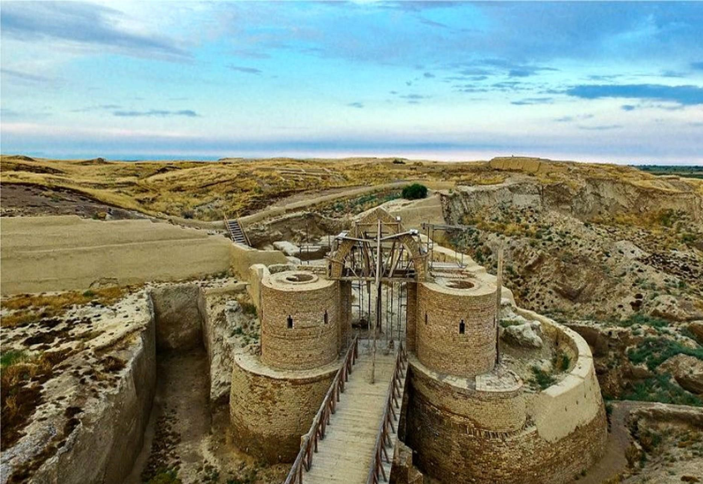
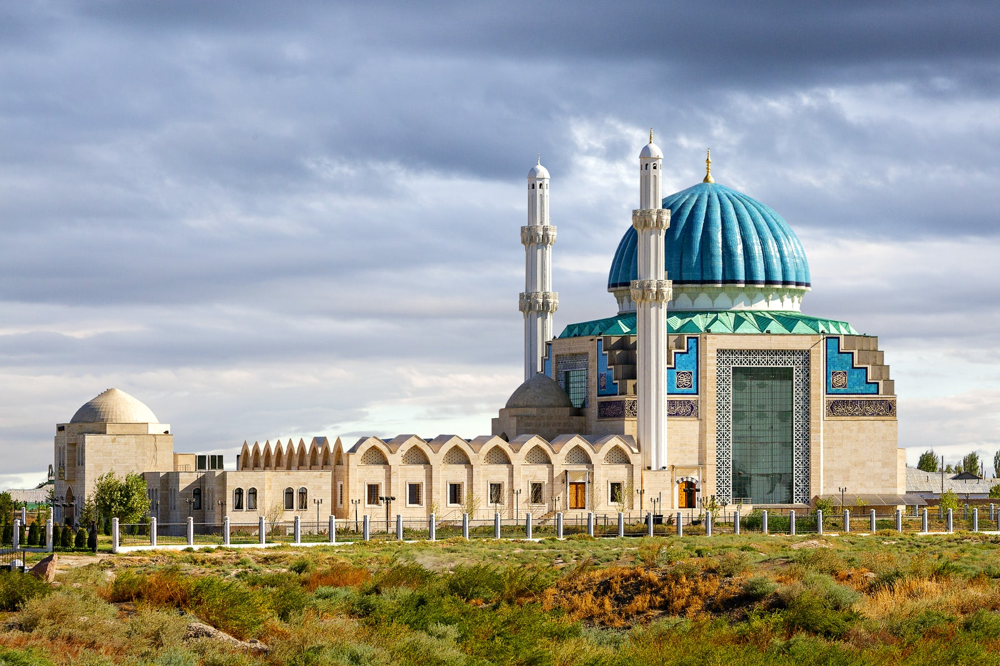
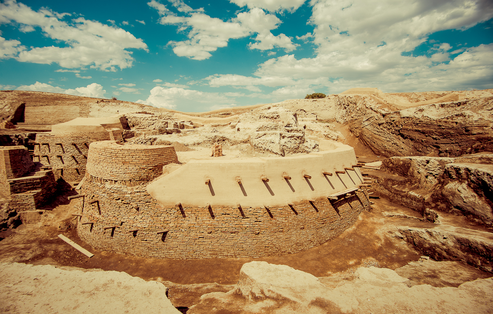

| City | Century | Location |
| Otrar | 1st century BC until the 5th century AD | located along the Silk Road in Kazakhstan |
| Turkestan | Turkistan is one of Kazakhstan's historic cities with an archaeological record dating back to the 4th century | Turkestan is located about 160 km northwest of Taraz city |
| Sauran | One of the earliest mentions of the city was made in the 10th century | located 43 kilometres (27 mi) north-west of the city of Turkistan in Southern Kazakhstan |
Otrar, also known as Farab, was a significant cultural and trade center. In addition, it was of great diplomatic and military strategic importance. In the past century, the first studies and excavations were carried out, discovering an ancient palace, mosques, and baths. Antique ceramics, metal tools, coins, and jewelry were also found. Now these artifacts can be seen in museums across the country. The city has a history dating back 2 thousand years. Visitors will be able to learn it thoroughly. The government with the assistance of UNESCO is working on the preservation of historical monuments.
Scientists and archeologists have still been studying Otrar. Most of the ancient town’s construction has been restored and preserved. This is one of the few historical places in the country, where you can walk through ancient streets and capture some really interesting photos and a few selfies too. If you want to get acquainted with this place, it is better to be prepared in advance – to get information from the internet, to watch the movie called “The death of Otrar” or you can order an excursion with a professional guide.
Once known as Shavgar and Yassy, Turkestan was one of the most important commercial centers of the Silk Road, the trade route between Europe and China. It was also the capital of the Kazakh khanate (an area ruled by a Khan) where the ceremonies of enthronement took place.
The Historical Museum of Turkestan is located in the historical and architectural monument of Kazarma along Tauke Khan Avenue. The museum is placed in the area of Ancient Turkestan. Originally the building was built to house the lower ranks of the first group of the Turkestan rifle battalion. The exposition of the museum consists of 8 sections: monuments of the stone, bronze and early iron eras, the Turkestan oasis of the Turkic period, the city of Shavgar, the city of Yasy, Khoja Ahmed Yassavi, the Ancient city of Turkestan, Turkestan the capital of the Kazakh Khanate, Turkestan the spiritual center of the Turkic world.
In the Turkistan Province, there once was a thriving medieval city, Sauran. One of the earliest mentions of the city was made in the 10th century. From these records it can be judged that the city was very advanced and served as a major administrative center. According to the ancient chronicles, the residents were engaged in craft and the improvement of the city, built fortifications and a plumbing system. The city had underground water pipelines with a total length of almost 110 km (68 mi).
At the moment, archaeological excavations are being carried out on the territory of the ancient settlement of Sauran and some restoration works are being done under the auspices of the Government of the Republic of Kazakhstan. This is an exceptional place that is worth visiting in order to see its picturesque ruins, and learn how people lived in ancient times.